|
After 2 continuous years in the US without an India trip, it was time to fly back for a quick visit home... |
A baby was added to the family in early 2010.. Little Sara! |
I met the Tutaknes after an eternity.. |
|
And Radhika tai's family as well... |
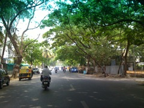 Samartha Path is now lush green with wide tree canopies... |
One fine day, Sumeet and his wife just randomly rode along on a calcified reindeer.. I had to push away to gaping onlookers... |
|
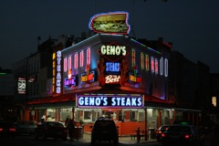 Sumeet dragged me to a Philadelphia landmark... however, I did not quite enjoy the famous Philadelphia cheesesteak.. ugh! |
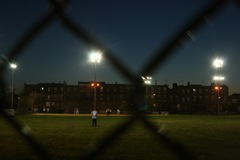 Baseball is a religion in these parts... An evening game on a ground in South Philadelphia... |
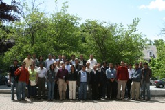 YRM 2010 Participants... A group of Indian academics successfully organized a pretty enlightening conference about opportunities in Indian academia for graduates in the US.... Food for thought! |
|
In the summer of 2010, I also traveled to Karlsruhe for a conference... Here's tiled trail to a ceramic factory from the palace grounds.. |
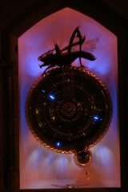 I visited Cambridge for a successfull interview with Microsoft Research... I quite liked the town and was almost tempted to accept the offer... Here's a fancy accurate clock inaugurated by Dr. Stephen Hawking.. |
A last stop in England to meet Sara on the way home... still fragile.. and enormously cute.. This would conclude a whirlwind tour involving Philadelphia->Providence->Boston->Karlsuhe->Cambridge->London->Philadelphia |
|
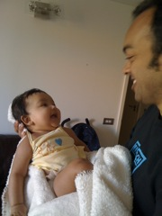 And Sara started to get along with her Mama just fine... |
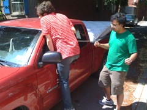 Back in Philadelphia, my lease with Park Towne ran out, and I had to bid goodbye to my home of many years... Michael and Tanmoy also moved around the same time and we collectively moved everyone's stuff in one go... We had to break into our own rental car since it was stuffed like crazy! |
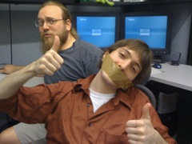 Back in lab, a curious creature had made his way in.... We had to periodically shut people up from random blabbering.. |
|
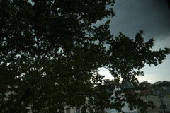 I stayed in West Philly for a while during the summer... Here's a different view of the summer thunderstorms... It was a much welcome relief since we had a particularly brutal summer that year and air-conditioning in West Philly homes is typically unreliable... |
Andre sent me to give a talk about my PhD at Cascadia that year just after I finished writing my thesis... It was a welcome break... I enjoyed an incredible sunset over the mountains of British Columbia.. right from the western edge of the UBC campus... |
I spent the Saturday of that trip hiking up Grouse Mountain... After a long break from physical activity, it was quite a challenge to climb up... A baby girl riding with dad on a maiden hike (laughs at pun) |
|
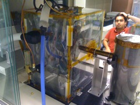 It's finally time to defend. Here I'm getting a tour of Varun's scientific setup at Caltech... |
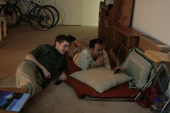 During the last few weeks of my stay in the US, I camped out with Tanmoy and Michael... An annoying friend managed to sneak in :P |
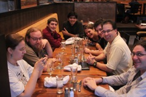 A going-away dinner with the lab... |
|
And thus begins a new confused day in the life of Sara |